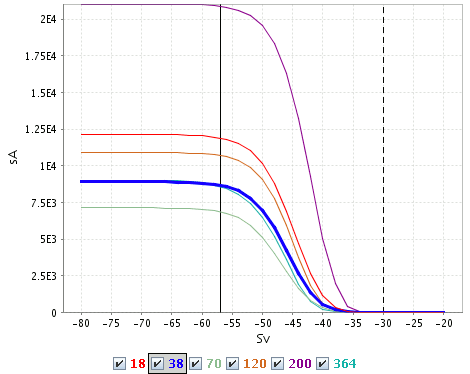

This view shows a plot of the threshold response curve, t = t(dB), defined as
t(dB) = sA(dB, ∞).
The curve is computed for the currently active region(s).
With lower threshold dBlow and upper threshold dBhigh the sA is
sA(dBlow, dBhigh) = t(dBlow) - t(dBhigh).

There is one curve for each frequency. The checkboxes below the plot can be used to select which frequencies should be plotted. The curve for the current frequency is always plotted and with a thick line.
The vertical lines indicate the threshold values set in the colorbar. If the upper threshold value only is used for modifying the color scale and not for clipping, then that line is dashed.